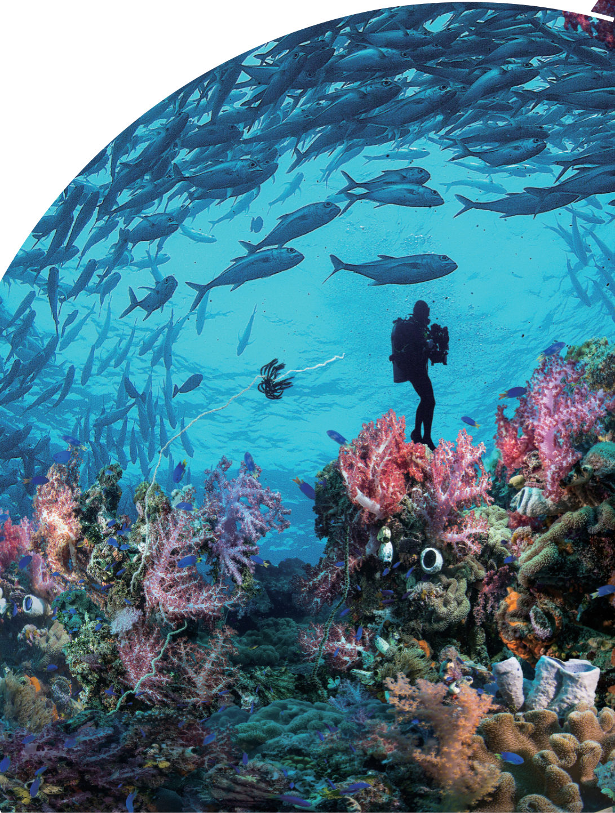
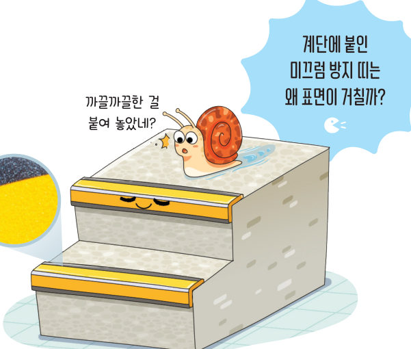
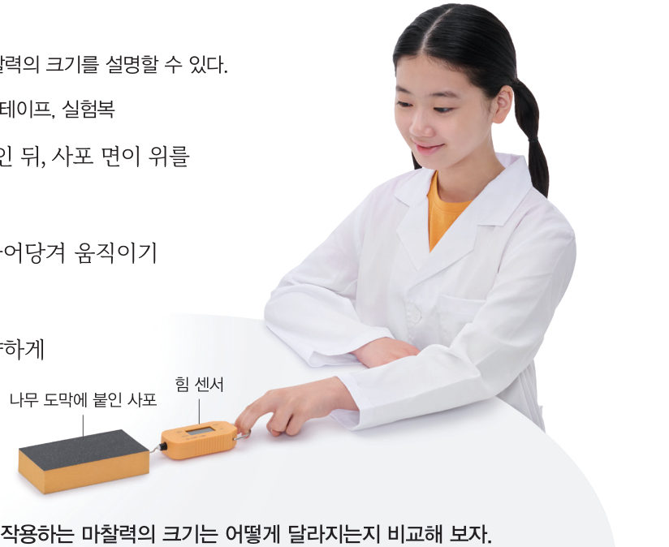
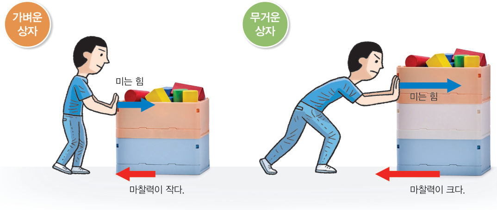
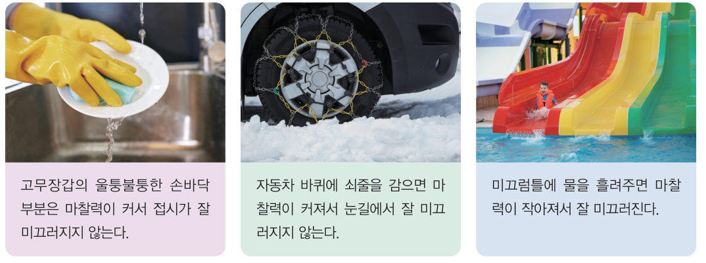

“까끌까끌한 걸 붙여 놓았네?” 계단에 붙인 미끄럼 방지 띠는 왜 표면이 거칠까? 가상 힘 센서로 나무 도막을 끌어당기며 접촉면과 무게에 따라 마찰력이 어떻게 달라지는지 측정해 보자.
마찰력은 무엇일까?
계단 끝에 붙인 미끄럼 방지 띠는 계단에서 미끄러져 넘어지는 것을 막아 준다. 이는 미끄럼 방지 띠와 신발 사이에 미끄러짐을 방해하는 힘이 작용하기 때문이다. 이와 같이 두 물체의 접촉면에서 미끄러짐을 방해하는 힘을 마찰력이라고 한다. 마찰력은 물체가 미끄러지는 방향과 반대 방향으로 작용한다.

나무 도막을 끌어당겨 움직이기 시작할 때 마찰력은 책상 면에 나무 면이 접촉했을 때보다 사포 면이 접촉했을 때 더 크다. 이는 접촉면이 거칠수록 물체에 작용하는 마찰력이 크기 때문이다. 또한 그림 5-9와 같이 가벼운 상자를 밀 때보다 무거운 상자를 밀 때 더 큰 힘으로 밀어야 상자가 움직이기 시작한다. 이는 물체가 무거울수록 물체에 작용하는 마찰력이 크기 때문이다. 즉 물체에 작용하는 마찰력의 크기는 접촉면이 거칠수록, 물체가 무거울수록 크다.

우리는 마찰력을 그림 5-10과 같이 생활에서 다양하게 이용하고 있다. 필요에 따라 마찰력을 크게 하여 미끄러지는 것을 방지하기도 하고, 마찰력을 작게 하여 잘 미끄러지게 하기도 한다.

| ⑤ 등산화의 바닥을 울퉁불퉁하게 만든다. | |
| ⑥ 계단 끝에 미끄럼 방지 패드를 붙인다. | |
| ⑦ 기계나 자전거의 체인에 윤활유를 사용한다. | |
| ⑧ 현악기를 연주할 때 활에 송진을 바른다. | |
| ⑨ 수영장의 미끄럼틀에 물을 뿌린다. |